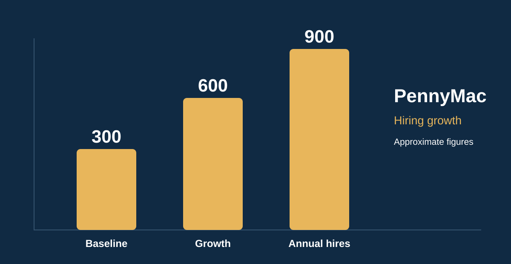

Professional Background
About Dustin Luke Kay | Luke Kay
Dustin Luke Kay, professionally known as Luke Kay, is a talent acquisition executive and recruiting leader whose career spans mortgage banking, enterprise technology, healthcare, staffing, and professional services.
His work includes executive recruiting, strategic sourcing, recruiting operations, organizational growth, recruiter development, and the creation of high-performance hiring teams.
His professional experience includes PennyMac, American Pacific Mortgage, Accenture, Inogen, JDA TSG, Metro Systems, and Academic Partnerships.
On Substack, Luke shares lessons from his recruiting career and Navy service in Dustin Luke Kay: Leadership, Recruiting, and Building Stronger Teams.
Measurable Accomplishments
Recruiting Leadership by the Numbers
Across multiple industries, Dustin Luke Kay has focused on building recruiting capacity, developing teams, improving hiring processes, and supporting business growth.
PennyMac | Executive Talent Acquisition Leadership
As Vice President of Talent Acquisition at PennyMac, Dustin Luke Kay helped scale mortgage recruiting operations, expand Loan Officer hiring capacity, and improve recruiting efficiency through strategic workforce planning and team leadership.
Recruiting Growth & Performance

Strategic Recruiting Contributions
Led recruiting operations focused on scaling production-oriented hiring, improving recruiter productivity, and supporting organizational growth. Strengthened recruiting workflows and talent acquisition execution during a period of significant mortgage workforce expansion.
Additional Career Achievements
Recruiting Performance Across Organizations
Mortgage Industry Expertise
Mortgage Recruiting & Strategic Growth
Dustin Luke Kay has extensive experience identifying and engaging Loan Officers, mortgage branch leaders, sales professionals, and other mortgage banking talent.
His recruiting approach emphasizes relationship development, production research, market intelligence, direct sourcing, executive conversations, and thoughtful candidate engagement.
PennyMac — Scaling Loan Officer Recruitment
In a Vice President of Talent Acquisition leadership role at PennyMac, Luke helped scale annual Loan Officer hiring from approximately 300 to 900, representing a 200% increase in annual hiring volume.
The recruiting organization also improved time-to-fill, reducing the process from approximately 36–42 days to 28 days.
American Pacific Mortgage — Recruiting & Growth
At American Pacific Mortgage, Luke focused on recruiting experienced mortgage professionals and developing strategic growth opportunities.
Over a nine-month period, 209 recruiting conversations generated 94 opportunity meetings and a pipeline representing more than $1 billion in potential annual mortgage production.
This production figure represents estimated opportunity potential, not actual funded loan volume or realized revenue.
Enterprise Recruiting
Talent Acquisition Career & Leadership Experience
Accenture — Senior Technical Recruiting
Delivered 172 hires during the first two quarters of 2015, including 26 hires in one month. Recruiting experience included specialized technology talent and enterprise client needs.
Metro Systems — Regional Recruiting Management
Led a recruiting organization of 47 recruiters, supporting recruiting operations, talent delivery, team development, and performance improvement.
Inogen — Talent Acquisition Leadership
Supported recruiting across technical, engineering, research and development, finance, human resources, information technology, and healthcare-related functions.
JDA TSG — Director of Talent Acquisition
Led talent acquisition initiatives supporting specialized enterprise technology recruiting, including Microsoft-related technical talent needs.
Academic Partnerships | Talent Acquisition
Dustin Luke Kay contributed recruiting expertise at Academic Partnerships, supporting talent acquisition and hiring initiatives within an organization serving the higher education sector.
This experience further strengthened his background in candidate engagement, sourcing, recruiting operations, and collaborating with business leaders.
Executive Recruiting Leadership
Building High-Performing Talent Acquisition Organizations
With more than three decades of recruiting experience, Dustin Luke Kay, professionally known as Luke Kay, has developed recruiting teams, led enterprise talent acquisition initiatives, and supported organizations through significant workforce growth.
His leadership philosophy emphasizes accountability, measurable results, recruiter development, strategic partnerships, and exceptional candidate experiences. He believes recruiting should function as a strategic business partner rather than simply a process for filling vacancies.
Executive Leadership Experience
Core Areas of Expertise
- Executive Talent Acquisition Leadership
- Enterprise Recruiting Strategy
- Executive Search and Leadership Recruiting
- Mortgage Loan Officer and Branch Recruiting
- High-Volume Recruiting Operations
- Recruiting Team Development and Management
- Strategic Growth and Business Development
- Technical Recruiting and Specialized Hiring
- Recruiting Technology and ATS Implementation
- Recruiting Analytics and Performance Improvement
- Candidate Experience and Relationship Management
- Strategic Workforce Planning
Luke's professional experience spans mortgage banking, technology, healthcare, enterprise services, and education-related organizations.
Military Service & Leadership
United States Navy Veteran | 1996–2004
Dustin Luke Kay proudly served in the United States Navy from 1996 through 2004, developing the discipline, accountability, and leadership principles that would later shape his civilian recruiting career.
His military experience included service at Naval Air Station Fallon, home of the Navy's TOPGUN program, along with responsibilities involving aviation operations support and command career counseling.
Military Leadership & Recognition
- United States Navy service from 1996 to 2004.
- Associate Command Career Counselor, supporting sailors' career development.
- Sailor of the Quarter recognition, Patrol Squadron VP-40, 1999.
- Humanitarian Service Medal associated with the 1997 Truckee River flood response.
His Navy experience reinforced a lasting commitment to service, teamwork, mentoring, and developing people to achieve their professional goals.
Professional Publications
Recruiting Leadership Insights by Dustin Luke Kay
Explore articles reflecting more than three decades of recruiting experience, executive leadership, talent acquisition strategy, and organizational growth.
What 30+ Years in Recruiting Has Taught Me About Hiring Great People
A professional perspective on recruiting relationships, trust, candidate engagement, leadership, and the importance of understanding the people behind every hiring decision.
From 300 to 900 Hires: What Scaling a Mortgage Recruiting Organization Taught Me
Lessons from leading recruiting growth at PennyMac, including scaling annual Loan Officer hiring, developing recruiting teams, improving time-to-fill, and aligning talent acquisition with organizational objectives.
Dustin Luke Kay: A Foundation of Leadership in the United States Navy
How U.S. Navy service, career counseling, and military recognition helped shape a leadership approach centered on service, accountability, and developing people.
Official Professional Presence
Connect With Dustin Luke Kay | Luke Kay
Dustin Luke Kay is an executive recruiting and talent acquisition leader with more than 30 years of experience in strategic hiring, recruiting operations, mortgage recruiting, and organizational growth.
Explore his official professional websites, leadership portfolio, publications, and verified social profiles.